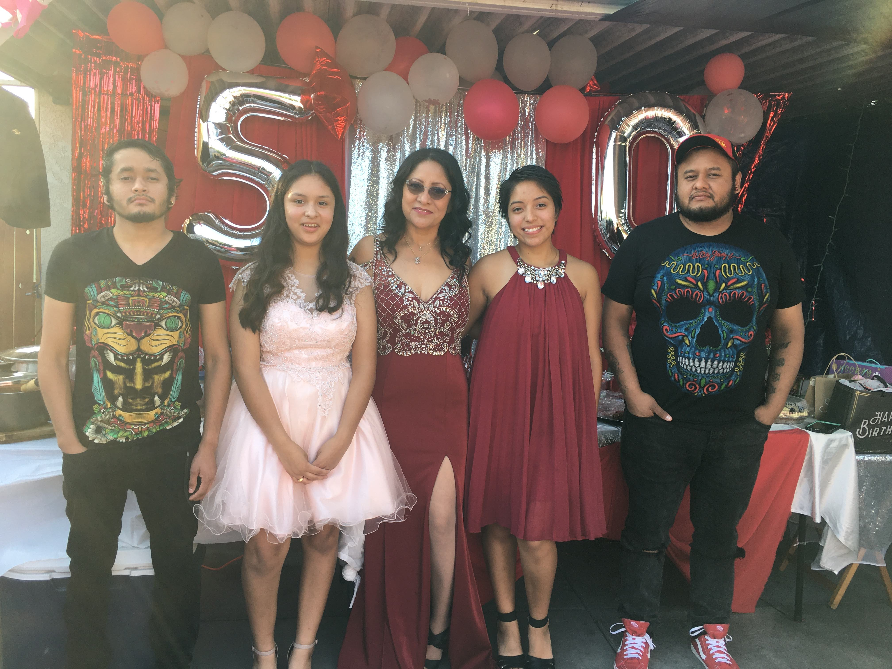

This is the story of an immigrant mother who has persevered in the United States.
This is Miguela when she was one year old at the local Mercado. She does not have many pictures of herself when she was growing up because her aunt kept them.
"I remember Tia Concha was always taking care of me. She was like my mom."
In this audio she talks about her mother, she didn't grow up with her and when she went to visit her she was raped. She was raised by her maternal grandparents who shaped her into the person she is today.
Miguela's journey to the United States happend because she was no longer happy with her husband. This video is a small recollection of life changing moments for her. She talks about the difficulties of coming here.
"I always looked up at the sky and said one day I will fly."
This was on Miguela's 50th birthday and her family. On the left is her son Royer, following her daughters Tais and Luz, and her eldest son Wilfredo.
"They are my reason for my living."
Miguela is happy with her life, but she has had her independent struggles. For anyone planning to come she says to "keep luchando."
One of her favorite songs is El Querreque. The reason for this is because her grandfather would always play huapangos and dance with her.
"Papá would always dance with me and would wait for me outside of dances as I got older."
"Time passes by and leaves its marks." On the left is Miguela's passport picture when she came for the second time and the right is her on August 2020.